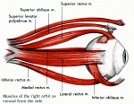

I am developing and studying the usability of a new biometric authentication technique that identifies people based on unique properties of eye movement. I am advised by Cecilia Aragon, and we are collaborating with Oleg Komogortsev.
Many current security technologies have serious usability problems. How often do you forget, write down, or reuse a password? How many times have you lost your keys? Biometric systems can solve some of these problems but are often still vulnerable to simple attacks. They are also sometimes seen as socially unacceptable because of privacy concerns, for example. Security systems that are secure, easy to use, and acceptable are urgently needed.
It is hard for someone else to forge your handwritten signature because your hand moves in a unique way as you sign your name. In the same way, your eyes have unique physical characteristics and move in a unique way. Our technique uses eye tracking to detect and verify your unique pattern, allowing you to log in to computer systems.
We are developing this technology with an early focus on usability. In parallel with creating and testing algorithms for extracting and verifying gaze prints, we are following a user-centered design process to determine how gaze print authentication should work, and what it should look like. We conducted informal usability tests of low fidelity paper prototypes, leading to the development of a software prototype powered by a Tobii eye tracker. We continued to refine the prototype based on additional usability testing.
User centered design should consider the real context of use for technology, so we have done our best to simulate a realistic context in our prototype testing. While gaze print authentication could be useful in a multitude of authentication situations, we are currently limiting the design of the prototypes to just one: an ATM authentication process. We ask participants questions about their typical ATM usage and create a scenario based on concrete details to help the participant focus and think about the context of use. While we intend to transfer our designs to other contexts later in the process, for the time being focusing on ATM authentication allows us to detect more realistic usability problems.
These pictures show photos of the low fidelity prototypes as well as screenshots from the high fidelity prototype: